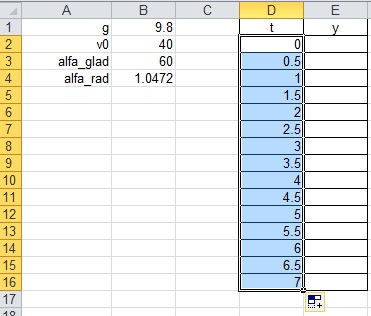

Практична робота 4.2
Побудувати графік руху снаряда, що вилетів із гармати під кутом 60° до горизонту з початковою швидкістю 40 м/с. Відомо, що час польоту становить приблизно 7 с. Графік має відображати залежність висоти польоту снаряда над горизонтом від часу.
Фізична складова роботи
Систему відліку пов'язано з Землею (рис. 4.28). Вісь ОХ спрямуємо горизонтально, вісь ОY – вертикально вгору. Початок системи координат розташуємо в кінці ствола гармати, вважаючи, що його розміщено на поверхні Землі. За початок відліку часу оберемо момент вильоту снаряда зі ствола ( = 0). Кут, під яким випущено снаряд, позначимо літерою а. За умовою а – 60°.
Для визначення координат тіла скористаємося рівняннями: . Оскільки .
Рис. 4.28. Траєкторія руху снаряду
Таким чином, для побудови графіка руху снаряда, випущеного під кутом до горизонту, треба побудувати графік функції
де – початкова швидкість снаряда, м/с; t – час руху снаряда, с; а – кут, під яким випущено снаряд; g – прискорення вільного падіння, .
Хід виконання
- Відкрийте файл Практ_4_2.xlsx. Перейдіть на Аркуш2 відкритої книги та створіть таблицю за формою, поданою на рис. 4.29. Тут g – прискорення вільного падіння, м/с2; – початкова швидкість снаряда, м/с; alfa_grad та alfa_rad – кут, під яким снаряд вилетів із гармати, заданий у градусах та радіанах відповідно.
Рис. 4.29. Таблиця-заготовка для введення початкових даних -
Введіть початкові дані.
- У клітинку В1 введіть наближене значення прискорення вільного падіння 9,8.
- У клітинку В2 введіть число 40 – значення початкової швидкості руху снаряда.
- У клітинку ВЗ введіть число 60 – значення кута, під яким вилетів снаряд (в градусах).
- У формулі (1) є математична функція sinx, аргумент якої – це значення кута, задане в радіанах. Тому треба виконати перетворення значення кута, заданого у градусах, у значення кута в радіанах (рис. 4.30). Для цього можна скористатися вбудованою в Excel математичною функцією RADIANS: введіть у клітинку В4 формулу =RADIANS(B3).
Рис. 4.30. Клітинка В4 містить результат роботи функції RADIANS - У діапазон D2:D16 введіть значення аргументу функції (1) від 0 до 7 з кроком 0,5.
- У клітинку D2 введіть число 0 – початок відліку часу = 0.
- У клітинку D3 введіть наступне значення t – число 0,5. Тепер клітинки D2 та D3 міститимуть перші два члени арифметичної прогресії, різниця якої становить 0,5.
- Виділіть клітинки D2:D3 та, перетягнувши маркер автозаповнення, заповніть решту клітинок діапазону D2:D16 значеннями членів арифметичної прогресії з першим членом 0 та різницею 0,5 (рис. 4.31).
- Обчисліть значення функції (1) у діапазоні Е2:Е16.
- У клітинку Е2 самостійно введіть формулу функції (1), яка описує рух тіла, випущеного під кутом до горизонту. Не забудьте створити відносні та абсолютні посилання на клітинки: посилання на клітинку D2, де міститься значення має бути відносним, а на клітинки, де записано значення g, v0 та а,– абсолютними ($В$1, $В$2 та $В$4).
- Скопіюйте цю формулу у діапазон ЕЗ:Е16. Ви маєте отримати таблицю, зображену на рис. 4.32.

Рис. 4.31. Заповнення діапазону D2:D16 членами арифметичної прогресії
Рис. 4.32. Заповнена таблиця - Побудуйте графік руху снаряда, випущеного під кутом до горизонту.
- Виділіть діапазон Е2:Е16 і побудуйте для нього діаграму – графік без маркерів, задавши у другому вікні майстра діаграм діапазон підписів осі Х, а саме D2:D16.
- У третьому вікні майстра задайте назву діаграми та її осей – X та У (рис. 4.33).
Рис. 4.33. Графік руху снаряда побудовано - Підвівши курсор до найвищої точки графіка, визначте максимальну висоту підняття снаряда та час від початку польоту, коли снаряд буде на максимальній висоті. Збережіть електронну книгу.